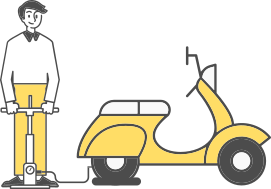
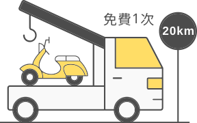
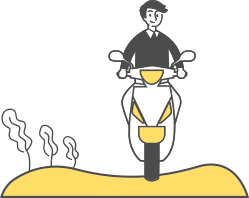
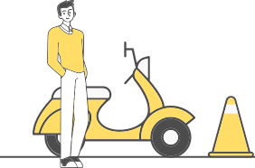

服務內容
富邦機車強制保險的保戶【服務車種:250cc(含)以下之機車】(監理特殊車種、改裝車及大型重型機車除外)，現在上網完成簡易登錄手續，即可享有富邦保戶獨享的免費「馬路小天使-機車道路救援服務」。
茲因礙於國內機車道援公司拖吊設備問題，尚無法對於監理特殊車種、改裝車及大型重型機車為救援服務，謹先行告知為除外服務事項，尚請見諒。
服務項目
因故障或無法行駛之拖吊救援服務及代為送油、充氣等急修服務詳細內容請至注意事項查詢。

服務次數
期限內享有一次拖吊及一次急修服務(基本里程20公里內免費，超過20公里每公里酌收50元服務費)。

服務車種
【250cc(含)以下之機車】/(監理特殊車種、改裝車及大型重型機車除外)

服務時間與範圍
全年24小時服務，範圍為台灣本島之救援車輛所能行駛之道路，外島地區暫不列入服務範圍。
救援服務
完成登錄後，請將救援服務卡隨身攜帶，欲申請救援服務時可直接撥打救援服務卡上載明之救援專線，並請留意有效服務日期。

使用方法
1. 撥打
立即撥打救援專線0800-001-518
2. 確認
確認身分資格
3. 告知
告知事故現況、車況及地點
4. 救援
富邦道路救援至現場服務
注意事項
- 完成登錄者（監理特殊車種、改裝車及大型重型機車除外）即可免費享有一年期之道路救援拖吊服務，請留意服務截止日期。
- 登錄相關資料以本公司電腦資料庫為主。
- 符合資格且登錄之客戶，期限內富邦提供一次免費拖吊及一次免費急修服務，若需第二次以上之服務時，請參考 「道路救援服務項目及收費標準」中之「車主自費價」，由客戶自行負擔費用。
- 拖吊服務:目的地以客戶指定地點為主，若無指定則可由服務人員提供建議，惟以不超過基本里程20公里為限， 超過基本里程需經客戶同意並議價後始可拖吊 。
- 急修服務:打氣服務、代送燃料油、代送冷卻水(機車不提供接電服務)
- 本公司訂有標準作業時間規範(自受理服務後起算至抵達現場服務)，但為不可抗力因素(如天災、暴動、交通尖峰
時刻及塞車等)，致服務有困難或無法提供服務者，不受此規範限制。
- 高速公路以1小時為限。
- 一般市區及道路以1小時為限。
- 偏遠鄉鎮市區及道路以2小時為限。
- 花東山區以4小時為限。
- 中央山脈偏遠山區以8小時為限。
- 測試文字測試文字測試文字測試文字測試文字測試文字測試文字測試文字測試文字測試文字
- 客戶申告服務後，若因故取消服務，需於15分鐘內致電救援專線0800-000-911告知，否則將視為一次有效服務。
- 客戶對救援過程及服務品質有疑慮者，請撥打專線0800-000-911申訴，將由專人為您服務。
- 測試文字測試文字測試文字測試文字測試文字測試文字測試文字測試文字測試文字測試文字測試文字
- 測試文字測試文字測試文字測試文字測試文字測試文字測試文字測試文字測試文字測試文字測試文字測試文字測試文字測試文字測試文字測試文字測試文字測試文字測試文字測試文字測試文字測試文字
- 測試文字測試文字測試文字測試文字測試文字測試文字測試文字測試文字測試文字測試文字測試文字
- 測試文字測試文字測試文字測試文字測試文字測試文字測試文字測試文字測試文字測試文字測試文字
- 測試文字測試文字測試文字測試文字測試文字測試文字測試文字測試文字測試文字測試文字測試文字
- 測試文字測試文字測試文字測試文字測試文字測試文字測試文字測試文字測試文字測試文字測試文字測試文字測試文字測試文字測試文字測試文字測試文字測試文字測試文字測試文字測試文字測試文字
- 測試文字測試文字測試文字測試文字測試文字測試文字測試文字測試文字測試文字測試文字測試文字
- 測試文字測試文字測試文字測試文字測試文字測試文字測試文字測試文字測試文字測試文字測試文字
- 測試文字測試文字測試文字測試文字測試文字測試文字測試文字測試文字測試文字測試文字測試文字
- 測試文字測試文字測試文字測試文字測試文字測試文字測試文字測試文字測試文字測試文字測試文字測試文字測試文字測試文字測試文字測試文字測試文字測試文字測試文字測試文字測試文字測試文字